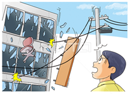
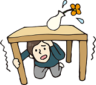

地震発生 - 会社 -

緊急地震速報が鳴り出したら
 可能であれば、ドアストッパー等で避難経路上の扉を開放してください。(※無理はしない。) また、むやみに外に飛び出すと、かえって危険です。 割れた窓ガラスや看板などが落下してくるかもしれません。身の安全を確保する
蛍光灯などの落下物や、棚などの転倒があるかもしれません。 机の下にかくれるなど、当面の安全を確保してください。 机などが無ければ、クッションやカバン等で頭部を守ってください。
揺れが収まったら
基本的に、自衛消防隊の指示に従って行動してください。 自分勝手に行動したり、黙って移動したりすると、かえって危険です。 また、ドアストッパー等で避難経路上の扉を開放してください。